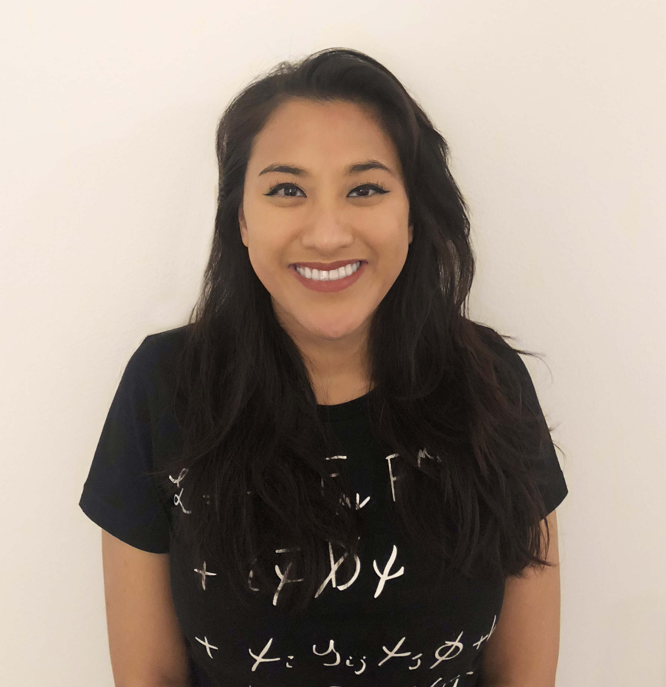

About Felicia
The Short
I am an engineer living in the Bay Area.
The Long
I completed my undergraduate studies at Boston University, specializing in Biochemistry and Molecular Biology. After working for a few years at a defense contractor and analyzing biophysical models of warfighters, my newfound interest in engineering led me back to BU to complete a master’s in Mechanical Engineering. I worked as a mechanical engineer addressing noise and vibration problems in marine and industrial environments for a few years before relocating to the west coast. I am continuing my passion for engineering and science with a consumer electronics company.